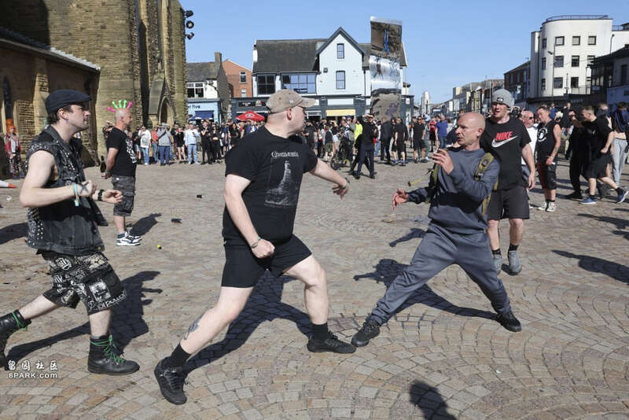
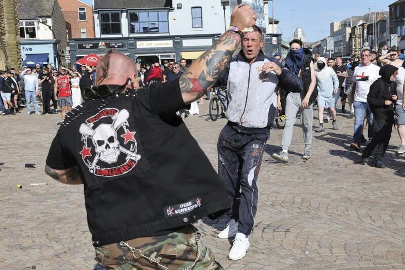

有示威者投掷自制标枪。（网络图片）
英国多地近日爆发极右翼反移民骚乱，有示威者更攻击两间收容寻求政治庇护者的酒店。令来自香港的申请政治庇护者担心成为目标，近日传有3名来自香港的寻庇者求助，指担心自己遭受攻击。
美国之音报道，有三名来自香港的寻庇者向在英港人组织「港援」（Hong Kong Aid）求助。「港援」称，收到三名住在庇护所的人，包括老、中、青人士，在紧张气氛下求助，担心自己的酒店成为目标。

两名示威者在现场打架。（美联社）

英国多个市镇爆发大规模骚乱。（美联社）
英国持刀伤人案引发骚乱，被指为13年来最大规模。（X@TRobinsonNewEra）
英国多地极右分子发起示威。（X@TRobinsonNewEra）
施纪贤宣布将成立一支「常备军」来应对骚乱。（路透社）
马斯克在社交媒体X上发表评论。（X@elonmusk）
「港援」负责人表示，虽然暴动者暂未有攻击香港人，但他们的立场是反移民，忧虑未来有可能针对香港人。他又指，现时「港援」总共协助22名寻庇者，虽然暂时未有港人受到攻击，但他正在准备如果情况转坏，可能会安排寻庇者离开酒店。
英国绍斯波特（Southport）于7月29日发生持刀伤人案，3名舞蹈班儿童在案中不幸亡故。事件引起英国各地发生骚乱，并谣传疑犯是一名「激进穆斯林移民」。英国骚乱越演越烈，又有极右翼示威者针对移民的住宿地点。英国首相施纪贤（Keir Starmer）誓言不惜动用军队，必将参与暴动者绳之于法。
Advertisements